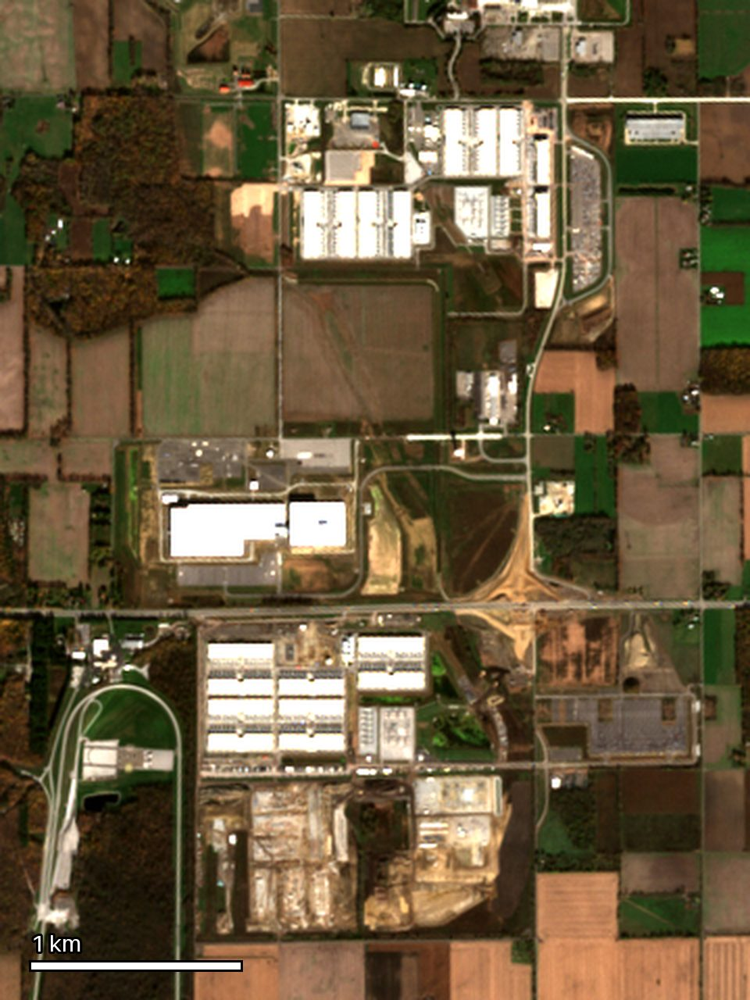
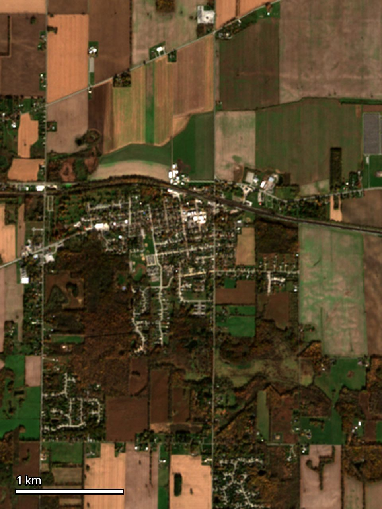
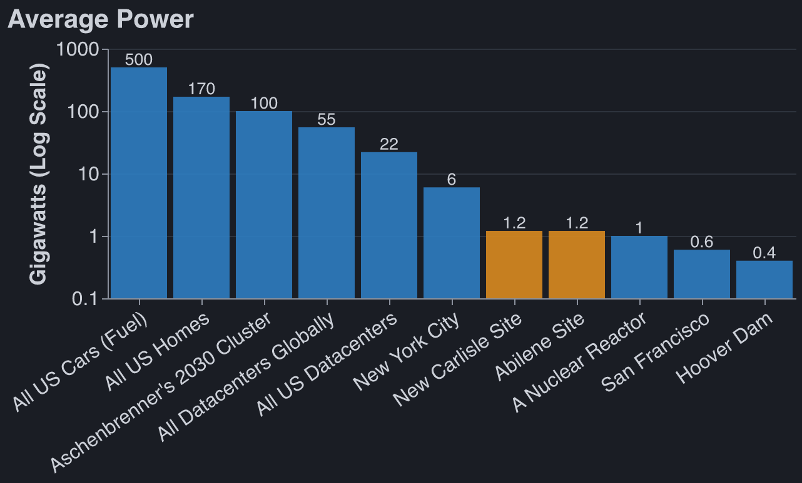
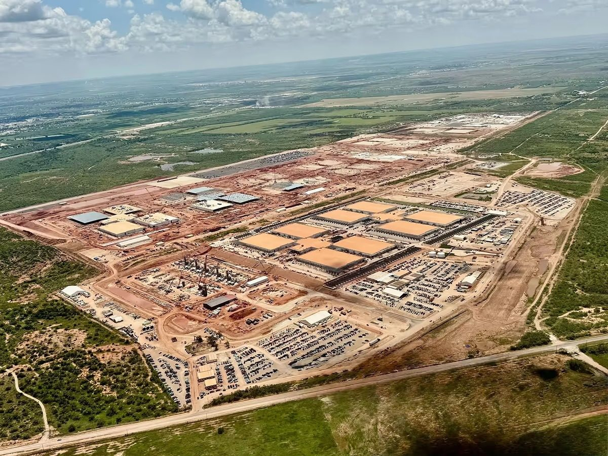
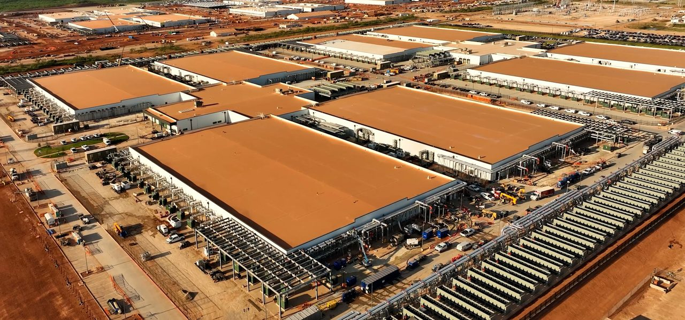
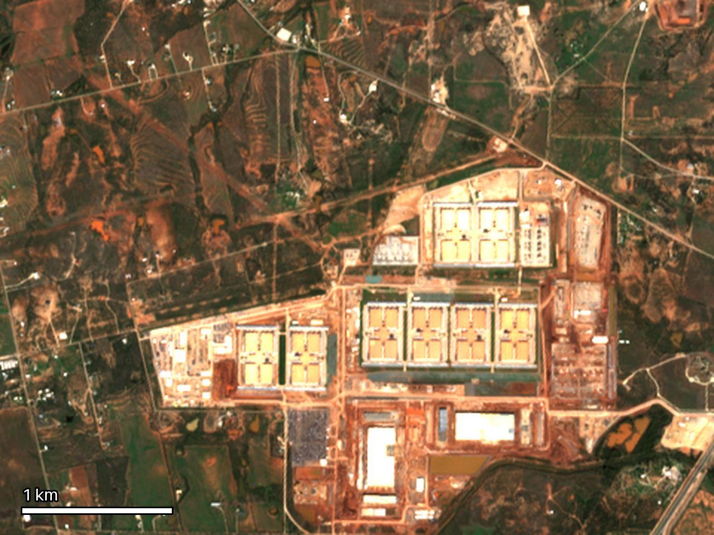
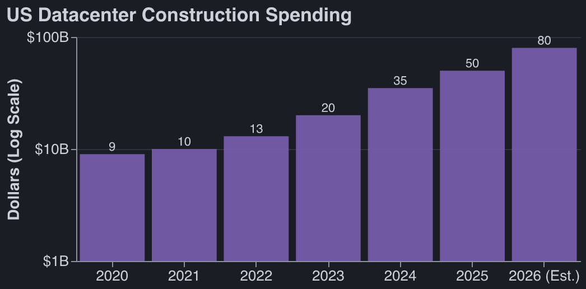

Giant Datacenters
★★☆☆☆Published Last edited
In 2024 Leopold Aschenbrenner wrote Situational Awareness. He made the sci-fi prediction that in 2030 the AI labs would build a “trillion-dollar cluster.” We’re not on track, but the datacenters are big.
Anthropic’s biggest cluster costs $15B. It’s Project Rainier, in New Carlisle, Indiana.




- 4,000 people constructed the site and 900 work there permanently
- Total of 89 acres of indoor floor space
- Houses flops, or 1.6 zettaflops (fp8). This is as many flops as the entire world had as of 2015
- The cluster is ~30% of Anthropic’s total compute
- The site uses 1.2 billion watts of power

The story is largely the same in Abilene:
- 6,400 workers
- 92 acres of indoor space
- Houses flops, or 2 zettaflops (fp8)
- The cluster is ~20% of OpenAI’s total compute
- The site uses 1.2 billion watts of power





New Carlisle is an AWS datacenter.[1] Notably, this means the site uses Trainium chips. My semi-professional opinion is that compute is fairly fungible these days: inference can run almost anywhere and most training is secretly inference via RL. The one thing you might not want to do at New Carlisle is a large pretraining run, which depends on at least 100k GPUs having very high-bandwidth connections to one another. I will not get into too many technical details here, but suffice it to say that one would prefer to do a frontier pretrain on TPUs or Nvidia GPUs over Trainiums. I speculate with low confidence that Anthropic pretrains at New Carlisle and finds a way to make Trainiums work, or pretrains at a Google Cloud datacenter on TPUs.
Abilene, meanwhile, houses almost entirely Nvidia GPUs (B200s and B300s), which one can use for almost anything.
The ownership structure of the site is a mess:
- Lancium (an energy startup, worth $10 billion) owns the land.
- Crusoe is the lead developer and landlord. They construct buildings, including a 360 MW gas plant for additional power capacity.
- Oracle buys the chips and builds the interior of the datacenter (the networking, cooling, etc.)
OpenAI didn’t have good enough credit to own chips outright, which is why other firms, especially Oracle, own the chips themselves.

A datacenter is much more than just GPUs.
- Hundreds of thousands of miles of fiber-optic cable, enough to wrap around the world at least ten times.
- Abilene has liquid cooling piped to every chip. AWS’s Trainium chips are air-cooled and don’t require this.
- Security: MFA at entry points and a perimeter wall that would stop a fully-loaded 18-wheeler at Abilene.
- Exabytes ( bytes) of storage. For context, global storage capacity is about bytes, making these sites single-digit bps of global capacity.

Abilene is a town of 130,000, and the datacenter employs only 6,400 construction workers and about 300 permanent staff. All of Taylor County has GDP $10 billion, compared to $12 billion in annual datacenter-related spend, of which maybe $1 billion is labor and construction costs which residents and local businesses collect.
Crusoe got an 85% discount on property taxes (from $150 million down to $22 million). In addition, Texas has a statewide exemption on sales taxes for datacenters, saving Oracle $1.4 billion.[2]
New Carlisle, Indiana
New Carlisle is in St. Joseph County, with annual GDP $19.5 billion compared to datacenter spend of $5 billion a year. The AWS campus employs 900 people of 270k county residents.
In 2025 the town voted 4-0 against a new datacenter adjacent to the existing site. The existing site needs further state permits before it can expand.
On Track #

If we naively extrapolate that the biggest datacenters in 2030 will be 10x bigger than today, then they will:
- Employ 60,000 construction workers and 3,000 permanent staff
- Use 2% of US electricity production
- Cost $120 billion per year, 0.4% of US GDP
- Hold flops of compute, enough to train GPT-6 Astra once every day.
Those numbers really don’t match what I’d qualitatively expect in the ‘singularity.’
Possibly this is the update I should expect based on how the past few years have gone. This week an AI solved the Riemann hypothesis, yet here I am typing with my fingers and thinking with an unenhanced meat computer inside a home constructed in the 1950s. Life is crazy at high levels of abstraction and utterly mundane in its concrete details.
Photo credits: the New Carlisle aerial and data hall photos are by Amazon, and the Abilene aerials are by Crusoe and OpenAI. The satellite images contain modified Copernicus Sentinel data 2026.
Notes #
Anthropic agreed to spend at least $110B on AWS services through 2036. The entirety of the New Carlisle site’s capacity is used by Anthropic. It’s unclear what rights Anthropic has under their deal with AWS. ↩︎
Fermi estimate. Texas waives its 6.25% state sales tax on equipment bought for a qualifying datacenter, and the saving goes to whoever buys the equipment. At Abilene that is mostly Oracle, which buys the servers and networking gear: about $22 billion (the $18 billion and $4 billion bars in the chart above). 6.25% of $22 billion is $1.4 billion. Crusoe gets the same break on the cooling and electrical equipment it buys, worth about $0.4 billion more. Local sales tax still applies. No public record confirms that the site is certified for the exemption, though it clears the thresholds for size, investment and jobs many times over. ↩︎
Sources #
Claude found these sources. Robbie did not necessarily review them.
- Estimate: Amazon announced $11 billion in 2024, for a campus then planned at 16 buildings (Indiana Economic Development Corporation, 2024). The county’s compliance review found $8.9 billion invested by January 1, 2026 (Measured AI, 2026), when 11 of today’s 18 buildings were running (Epoch AI, 2026): $8.9 billion × 18 ÷ 11 = $15 billion. The New Carlisle bars in the spending chart, estimated part by part, also add up to about $15 billion. https://measuredai.substack.com/p/aws-new-carlisle-data-center-campus https://epoch.ai/data/ai-data-centers/directory/anthropic-amazon-new-carlisle https://www.iedc.in.gov/events/news/details/2024/04/25/gov.-holcomb-announces-amazon-web-services-plans-to-invest-11b-to-create-a-new-data-center-campus-in-northern-indiana ↩︎
- New York Times (2025), “At Amazon’s biggest data centre, everything is supersized for AI”, read via The Nightly’s syndicated copy: “On a typical week, about 4,000 workers are on site”, and the complex will have “hundreds of thousands of miles of fibre connecting every chip and computer together”. https://thenightly.com.au/business/the-new-york-times-at-amazons-biggest-data-centre-everything-is-supersized-for-ai-c-19309860 ↩︎
- Corey Trinetti, Measured AI (2026), “AWS New Carlisle Data Center Campus: Project Rainier - Where Anthropic Trains Claude”: at the county’s compliance review in June 2026, “AWS reported 935 permanent on-campus jobs to date”. https://measuredai.substack.com/p/aws-new-carlisle-data-center-campus ↩︎
- Estimate: 18 operating buildings × 216,000 square feet each = 3.89 million square feet, which is 89 acres at 43,560 square feet per acre. The building size is from Corey Trinetti, Measured AI (2026), “nine data center buildings, each about 35 feet tall and 216,000 square feet in size”, and is published only for the nine northern buildings. https://measuredai.substack.com/p/aws-new-carlisle-data-center-campus ↩︎
- Estimate: Epoch AI, Frontier Data Centers hub, “Anthropic-Amazon New Carlisle” (2026): “It hosts an estimated 818k H100-equivalents of AI compute”, which the page gives as 1.62 × 10²¹ 8-bit operations per second. Epoch’s arithmetic: 16 buildings × 65,311 Trainium2 chips × 1.3 × 10¹⁵ operations per second each, plus 2 buildings × 52,033 Trainium3 chips × 2.52 × 10¹⁵. https://epoch.ai/data/ai-data-centers/directory/anthropic-amazon-new-carlisle ↩︎
- Estimate: AI Impacts (2016), “Global computing capacity”, put all the world’s computing hardware at about 2 × 10²⁰ to 1.5 × 10²¹ FLOPS around the end of 2015. Epoch AI’s 1.6 × 10²¹ for New Carlisle is at the top of that range. The comparison is loose: the 2015 figure counts general-purpose arithmetic at higher precision, and the site’s figure is a peak 8-bit rate. https://aiimpacts.org/global-computing-capacity/ ↩︎
- Epoch AI, Frontier Data Centers hub, “Anthropic-Amazon New Carlisle” (2026): an estimated “1,037 MW of IT power”, which Epoch’s calculation sheet turns into 1,244 MW for the whole facility at a power usage effectiveness of 1.2. https://epoch.ai/data/ai-data-centers/directory/anthropic-amazon-new-carlisle ↩︎
- Oracle (2025), “Oracle Fact Sheet: Stargate Data Centers”, posted by Rep. Jodey Arrington’s office: “There are more than 6,400 construction workers on site every day”. https://arrington.house.gov/UploadedFiles/FINAL_Oracle_OAI_Data_Center_Fact_Sheet_092225b.pdf ↩︎
- Crusoe (2025), 2024 Impact Report, p. 19: “Upon completion in 2026, the campus will house eight buildings covering 4 million square feet”, which is 92 acres at 43,560 square feet per acre, and “The data center campus will support AI workloads with 1.2 GW of power capacity”. https://cdn.prod.website-files.com/6855c1aa175582ee23e0aa19/68710273a71bb7c11049ba28_Crusoe_Impact_Report_2024.pdf ↩︎
- Estimate: Epoch AI, Frontier Data Centers hub, “OpenAI Stargate Abilene” (2026): “It hosts an estimated 1,019k H100-equivalents of AI compute”, which the page gives as 2.02 × 10²¹ 8-bit operations per second. Epoch’s arithmetic: 403,200 GPUs × 5 × 10¹⁵ operations per second each. https://epoch.ai/data/ai-data-centers/directory/openai-stargate-abilene ↩︎
- Mark Zuckerberg on Meta’s third-quarter 2024 earnings call (October 30, 2024), as transcribed by Benzinga (2024): “We’re training the Llama 4 models on a cluster that is bigger than 100,000 H100s”. Also reported by Business Insider (2024). https://benzinga.com/z/41643021 https://www.aol.com/mark-zuckerberg-flexes-metas-cluster-184110913.html ↩︎
- Anthropic (2026), “Anthropic and Amazon expand collaboration for up to 5 gigawatts of new compute”. Anthropic’s own wording is “more than $100 billion over the next ten years”. The $110 billion figure, running from May 2026 to April 2036, is from Anthropic’s S-1 as reported by Tom’s Hardware and CNBC, and is not on this page. https://www.anthropic.com/news/anthropic-amazon-compute ↩︎
- CNBC (2025), “Amazon opens $11 billion AI data center Project Rainier in Indiana”: “The complex was built exclusively to train and run models from Anthropic”. https://www.cnbc.com/2025/10/29/amazon-opens-11-billion-ai-data-center-project-rainier-in-indiana.html ↩︎
- Epoch AI, Frontier Data Centers hub, “OpenAI Stargate Abilene” (2026): an estimated 100,800 GB200 and 302,400 GB300 GPUs across the eight buildings, about 1 million H100-equivalents. https://epoch.ai/data/ai-data-centers/directory/openai-stargate-abilene ↩︎
- Estimate: Dealroom (2026), “Nvidia to invest up to $3B in Texas power developer Lancium”: “An initial $2 billion buys roughly 20% of Lancium”. $2 billion ÷ 20% = $10 billion. The article reports the investment and does not itself state a valuation. https://dealroom.co/news/143983-nvidia-to-invest-up-to-3b-in-texas-power-developer-lancium/ ↩︎
- Epoch AI (2026), calculations sheet for Stargate Abilene: “Title V permit application specifies 10 natural gas turbine generators, with a total of 5 _ 38 MW + 5 _ 34.1 MW = 360.5 MW between them.” https://docs.google.com/spreadsheets/d/1M5VPpNDGTPgssU1x3xQJKv33EIa7-wgpDIFM8uzpodQ/ ↩︎
- Fortune (2025), on the September 2025 press tour of the Abilene site, when two of its eight buildings were finished: crews had “laid down enough fiber optic cable to wrap the Earth 16 times.” https://fortune.com/2025/09/23/openai-oracle-and-softbank-expand-stargate-with-five-new-ai-data-centers-staging-texas-media-spectacle-to-counter-critics/ ↩︎
- Crusoe (2025), “An inside look at the Abilene AI data center”: “We are building this project with closed-loop, non-evaporative liquid cooling systems”. The Nvidia GB200 NVL72 racks it houses are liquid-cooled. https://www.crusoe.ai/resources/blog/an-inside-look-at-the-abilene-ai-data-center ↩︎
- The Register (2025), “Amazon Project Rainier: AI supercomputer for Anthropic”: Trainium2’s switchless design and lower compute density have “allowed AWS to get away with air cooling”. https://www.theregister.com/2025/07/04/project_rainier_deep_dive/ ↩︎
- Crusoe CEO Chase Lochmiller, interviewed by Billy Perrigo in TIME (2025): the Abilene perimeter is “secured in such a way that if you drove a fully loaded 18-wheeler into it,” the site would be undamaged. Read via AOL: https://www.aol.com/articles/crusoe-ceo-chase-lochmiller-building-181814209.html ↩︎
- Estimate: neither site publishes a storage figure. Blocks & Files (2026), “Musk’s Colossus DC cluster – what’s the storage situation?”, reports that at Colossus 1 “230,000 GPUs need >1 EB of capacity for training and checkpointing workloads”, which is 4 to 5 terabytes per GPU. At that ratio Abilene’s 400,000 GPUs need about 2 exabytes. https://www.blocksandfiles.com/flash/2026/11/04/musks-colossus-dc-cluster-whats-the-storage-situation/5307253 ↩︎
- Wasabi (2022), “What Does It Take to Store Zettabytes of Data?”, citing IDC: the world’s installed storage capacity “reached 7.9 zettabytes (ZB) in 2021” and was forecast to grow about 19% a year through 2025. A zettabyte is 10²¹ bytes. https://wasabi.com/blog/data-management/cloud-object-storage-zettabytes ↩︎
- Census Reporter (2024), Abilene, TX profile, from the Census Bureau’s American Community Survey 2024 1-year estimates: population 130,033. https://censusreporter.org/profiles/16000US4801000-abilene-tx/ ↩︎
- Texas Standard (2026) reports about 300 permanent jobs at the Abilene site once it is running. The tax abatement requires 357 full-time jobs (Business Insider, 2025). https://texasstandard.org/stories/stargate-data-center-abilene-texas-construction-ai-artificial-intelligence/ ↩︎
- U.S. Bureau of Economic Analysis via FRED (2026), series GDPALL48441: Taylor County’s GDP was $9.87 billion in 2024. https://fred.stlouisfed.org/data/GDPALL48441.txt ↩︎
- Estimate: Epoch AI (2026) puts the campus “at a capital cost of $31.2 B”. Construction began in June 2024 (Crusoe, 2025), so that is about 2.5 years of building: $31.2 billion ÷ 2.5 = $12 billion a year. https://epoch.ai/data/ai-data-centers/directory/openai-stargate-abilene https://www.crusoe.ai/resources/newsroom/crusoe-announces-flagship-abilene-data-center-is-live ↩︎
- KTAB/KRBC via Yahoo News (2025), “Abilene City Council weighs large tax abatement for Lancium”, quoting City Manager Robert Hanna: “On the tax abatement side, it’s 15% of their tax liability. So, we’re abating 85%, and we get 15%.” https://www.yahoo.com/news/abilene-city-council-weighs-large-005212844.html ↩︎
- Estimate: the Development Corporation of Abilene (2025), in an award application to the Texas Economic Development Council, projects that “the City of Abilene will receive an estimated $22.6 million in property tax revenue each year for 20 years”. That is the 15% left after the abatement, so the full city bill is $22.6 million ÷ 0.15 = $151 million a year. https://texasedc.org/assets/main/awards/CEDA2025/abilene-2025-ceda.pdf ↩︎
- Texas Tribune (2026), “Texas losing a billion dollars a year on data center tax break”: “Qualifying data centers are exempted from paying the state’s 6.25% sales taxes on purchases related to building and maintaining the facility”. https://www.texastribune.org/2026/04/08/texas-data-centers-sales-tax-break-billion-dollars/ ↩︎
- U.S. Bureau of Economic Analysis via FRED (2026), series GDPALL18141: St. Joseph County’s GDP was $19.49 billion in 2024. https://fred.stlouisfed.org/data/GDPALL18141.txt ↩︎
- Estimate: about $15 billion for the 18 buildings now running ÷ about three years of building = $5 billion a year. The $15 billion scales up what the county’s compliance review found: Corey Trinetti, Measured AI (2026), reports that “$8.9 billion of the $11 billion had been invested as of January 1, 2026”, when 11 of the 18 buildings were running. Amazon announced the $11 billion in April 2024 (Indiana Economic Development Corporation, 2024). https://www.iedc.in.gov/events/news/details/2024/04/25/gov.-holcomb-announces-amazon-web-services-plans-to-invest-11b-to-create-a-new-data-center-campus-in-northern-indiana https://measuredai.substack.com/p/aws-new-carlisle-data-center-campus ↩︎
- USAFacts (2026), from the Census Bureau’s population estimates: “In 2025, there were about 272,900 people living in St. Joseph County, IN.” https://usafacts.org/answers/how-many-people-live-in-the-us/county/st-joseph-county-in/ ↩︎
- WVPE (2025), “New Carlisle council opposes second data center nearby”: “The New Carlisle Town Council voted 4-0 Tuesday for a resolution opposing a developer’s request to rezone over 1,000 acres of farmland near New Carlisle for a data center.” https://www.wvpe.org/wvpe-news/2025-10-24/new-carlisle-council-opposes-second-data-center-nearby ↩︎
- Corey Trinetti, Measured AI (2026), “AWS New Carlisle Data Center Campus: Project Rainier - Where Anthropic Trains Claude”: the 14-building expansion has two pending state permits, an air permit applied for in May 2026 and a wetlands permit applied for in June 2026, with “decisions likely by early 2027”. https://measuredai.substack.com/p/aws-new-carlisle-data-center-campus ↩︎
- Estimate: three ways to get the factor. Trend: Epoch AI (2025), “Trends in AI Supercomputers”, measured the power needs of leading AI supercomputers doubling every year, which compounds to 16x over the four years to 2030; the same paper projects a 9 GW system for mid-2030, 7.5x today’s 1.2 GW. Announced sites: the largest, OpenAI’s in Ohio, is planned to reach 8 GW in 2032 (OpenAI, 2026), about 4x by 2030. Aschenbrenner’s table (2024) goes from about 1 GW in 2026 to about 100 GW in 2030, 100x. 10x is a round number between the announced sites and the trend. https://epoch.ai/blog/trends-in-ai-supercomputers https://openai.com/index/openai-joins-ports-pike-project/ https://situational-awareness.ai/racing-to-the-trillion-dollar-cluster/ ↩︎
- Estimate: today’s Abilene site times ten. Workers: 6,400 in construction and about 300 permanent, times ten. Power: 12 GW against an average of 516 GW of US generation in 2025 (4,523 TWh, EIA, 2026) is 2%. Cost: $31 billion times ten is $310 billion, spread over 2.5 years of building as at Abilene is $120 billion a year, against 2025 US GDP of $30.9 trillion (BEA via FRED, 2026). Compute: 2 × 10²¹ times ten for the power, times 2.4 for four years of chips getting 25% more efficient a year (the gap between the 2.5x-a-year performance growth and 2x-a-year power growth Epoch AI measured). https://www.eia.gov/energyexplained/electricity/electricity-in-the-us-generation-capacity-and-sales.php https://fred.stlouisfed.org/data/GDPA.txt https://epoch.ai/blog/trends-in-ai-supercomputers ↩︎
- Estimate: Epoch AI’s estimate of GPT-6 Astra’s training run is about 9.4 × 10²⁶ FLOP (at least 100,000 GB200 chips for about 90 days at 25% utilization), as relayed by FutureSearch (2026) and not checked against Epoch’s own page. A site with 5 × 10²² flops at the same 25% utilization does that much in about 21 hours. The whole Abilene site today would take about 22 days. https://futuresearch.ai/app/p/a/rsi-largest-training-compute?idx=0 ↩︎
Comments